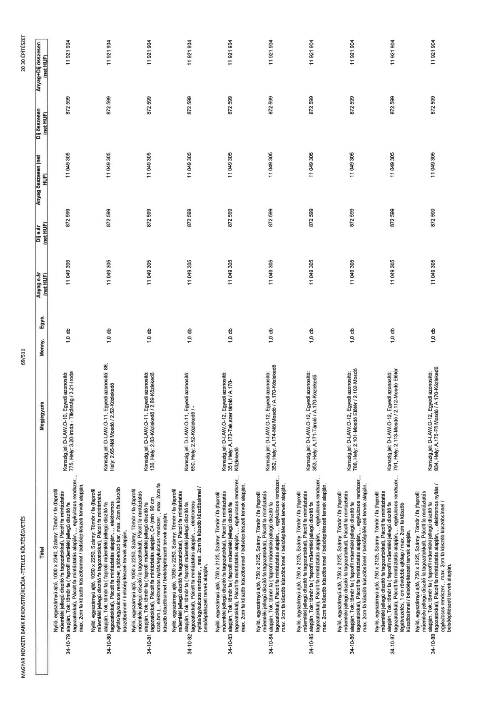

| Tétel | Megjegyzés | Menny. | Egys. | Anyag e.ár (net HUF) | Díj e.ár (net HUF) | Anyag összesen (net HUF) | Díj összesen (net HUF) | Anyag+Díj összesen (net HUF) |
|---|---|---|---|---|---|---|---|---|
| 34-10-79 alapján, Nyíló, egyszárnyú ajtó, 1000 x 2340, Szárny: Tömör / fa (faprofil műemléki jellegű díszítő fa tagozatokkal), Pácolt fa mintáztatás alapján, Tok: tömör fa (faprofil műemléki jellegű díszítő fa tagozatokkal), Pácolt fa mintáztatás alapján, , egykulcsos rendszer, , max. 2cm fa küszöb küszöbsínnel / belsőépítészeti tervek alapján, | Konszig.jel: D-I.AW-O-10; Egyedi azonosító: 775, Hely: 3.20-Iroda - Titkárság / 3.21-Iroda | 1,0 | db | 11 049 305 | 872 599 | 11 049 305 | 872 599 | 11 921 904 |
| 34-10-80 alapján, Nyíló, egyszárnyú ajtó, 1050 x 2250, Szárny: Tömör / fa (faprofil műemléki jellegű díszítő fa tagozatokkal), Pácolt fa mintáztatás alapján, Tok: tömör fa (faprofil műemléki jellegű díszítő fa tagozatokkal), Pácolt fa mintáztatás alapján, , elektromos nyitás / egykulcsos rendszer, ajtóbehúzó kar, max. 2cm fa küszöb küszöbsínnel / belsőépítészeti tervek alapján, | Konszig.jel: D-I.AW-O-11; Egyedi azonosító: 88, Hely: 2.65-Női Mosdó / 2.52-Közlekedő | 1,0 | db | 11 049 305 | 872 599 | 11 049 305 | 872 599 | 11 921 904 |
| 34-10-81 alapján, Nyíló, egyszárnyú ajtó, 1050 x 2250, Szárny: Tömör / fa (faprofil műemléki jellegű díszítő fa tagozatokkal), Pácolt fa mintáztatás alapján, Tok: tömör fa (faprofil műemléki jellegű díszítő fa tagozatokkal), Pácolt fa mintáztatás alapján, , C4 (min. 90 cm szab.bm.) , elektromos nyitás / egykulcsos rendszer, max. 2cm fa küszöb küszöbsínnel / belsőépítészeti tervek alapján, | Konszig.jel: D-I.AW-O-11; Egyedi azonosító: 136, Hely: 2.83-Közlekedő / 2.89-Közlekedő | 1,0 | db | 11 049 305 | 872 599 | 11 049 305 | 872 599 | 11 921 904 |
| 34-10-82 alapján, Nyíló, egyszárnyú ajtó, 1050 x 2250, Szárny: Tömör / fa (faprofil műemléki jellegű díszítő fa tagozatokkal), Pácolt fa mintáztatás alapján, Tok: tömör fa (faprofil műemléki jellegű díszítő fa tagozatokkal), Pácolt fa mintáztatás alapján, , elektromos nyitás / egykulcsos rendszer, max. 2cm fa küszöb küszöbsínnel / belsőépítészeti tervek alapján, | Konszig.jel: D-I.AW-O-11; Egyedi azonosító: 650, Hely: 2.52-Közlekedő / - | 1,0 | db | 11 049 305 | 872 599 | 11 049 305 | 872 599 | 11 921 904 |
| 34-10-83 alapján, Nyíló, egyszárnyú ajtó, 750 x 2125, Szárny: Tömör / fa (faprofil műemléki jellegű díszítő fa tagozatokkal), Pácolt fa mintáztatás alapján, Tok: tömör fa (faprofil műemléki jellegű díszítő fa tagozatokkal), Pácolt fa mintáztatás alapján, , egykulcsos rendszer, , max. 2cm fa küszöb küszöbsínnel / belsőépítészeti tervek alapján, | Konszig.jel: D-I.AW-O-12; Egyedi azonosító: 351, Hely: A.172-Tak.szertároló / A.170-Közlekedő | 1,0 | db | 11 049 305 | 872 599 | 11 049 305 | 872 599 | 11 921 904 |
| 34-10-84 alapján, Nyíló, egyszárnyú ajtó, 750 x 2125, Szárny: Tömör / fa (faprofil műemléki jellegű díszítő fa tagozatokkal), Pácolt fa mintáztatás alapján, Tok: tömör fa (faprofil műemléki jellegű díszítő fa tagozatokkal), Pácolt fa mintáztatás alapján, , egykulcsos rendszer, , max. 2cm fa küszöb küszöbsínnel / belsőépítészeti tervek alapján, | Konszig.jel: D-I.AW-O-12; Egyedi azonosító: 352, Hely: A.174-Női Mosdó / A.170-Közlekedő | 1,0 | db | 11 049 305 | 872 599 | 11 049 305 | 872 599 | 11 921 904 |
| 34-10-85 alapján, Nyíló, egyszárnyú ajtó, 750 x 2125, Szárny: Tömör / fa (faprofil műemléki jellegű díszítő fa tagozatokkal), Pácolt fa mintáztatás alapján, Tok: tömör fa (faprofil műemléki jellegű díszítő fa tagozatokkal), Pácolt fa mintáztatás alapján, , egykulcsos rendszer, , max. 2cm fa küszöb küszöbsínnel / belsőépítészeti tervek alapján, | Konszig.jel: D-I.AW-O-12; Egyedi azonosító: 353, Hely: A.171-Tároló / A.170-Közlekedő | 1,0 | db | 11 049 305 | 872 599 | 11 049 305 | 872 599 | 11 921 904 |
| 34-10-86 alapján, Nyíló, egyszárnyú ajtó, 750 x 2125, Szárny: Tömör / fa (faprofil műemléki jellegű díszítő fa tagozatokkal), Pácolt fa mintáztatás alapján, Tok: tömör fa (faprofil műemléki jellegű díszítő fa tagozatokkal), Pácolt fa mintáztatás alapján, , egykulcsos rendszer, , max. 2cm fa küszöb küszöbsínnel / belsőépítészeti tervek alapján, | Konszig.jel: D-I.AW-O-12; Egyedi azonosító: 788, Hely: 2.101-Mosdó Előtér / 2.102-Mosdó | 1,0 | db | 11 049 305 | 872 599 | 11 049 305 | 872 599 | 11 921 904 |
| 34-10-87 alapján, Nyíló, egyszárnyú ajtó, 750 x 2125, Szárny: Tömör / fa (faprofil műemléki jellegű díszítő fa tagozatokkal), Pácolt fa mintáztatás alapján, Tok: tömör fa (faprofil műemléki jellegű díszítő fa tagozatokkal), Pácolt fa mintáztatás alapján, , egykulcsos rendszer, , légátvezetés, 1 cm rövidebb ajtólap / max. 2cm fa küszöb küszöbsínnel / belsőépítészeti tervek alapján, | Konszig.jel: D-I.AW-O-12; Egyedi azonosító: 791, Hely: 2.113-Mosdó / 2.112-Mosdó Előtér | 1,0 | db | 11 049 305 | 872 599 | 11 049 305 | 872 599 | 11 921 904 |
| 34-10-88 alapján, Nyíló, egyszárnyú ajtó, 750 x 2125, Szárny: Tömör / fa (faprofil műemléki jellegű díszítő fa tagozatokkal), Pácolt fa mintáztatás alapján, Tok: tömör fa (faprofil műemléki jellegű díszítő fa tagozatokkal), Pácolt fa mintáztatás alapján, , elektromos nyitás / egykulcsos rendszer, , max. 2cm fa küszöb küszöbsínnel / belsőépítészeti tervek alapján, | Konszig.jel: D-I.AW-O-12; Egyedi azonosító: 834, Hely: A.175-Ffi Mosdó / A.170-Közlekedő | 1,0 | db | 11 049 305 | 872 599 | 11 049 305 | 872 599 | 11 921 904 |
